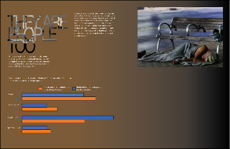
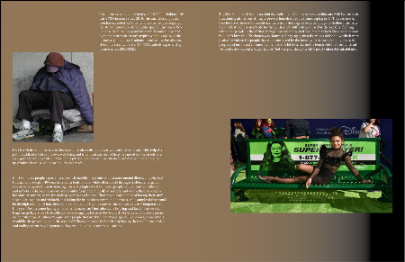
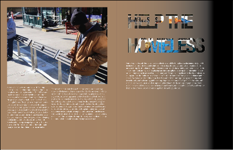

Advanced Design Project
This is the project I did for Advanced Design — my Social Justice Spreads on the topic of anti-homelessness. The goal was to use design as a tool for advocacy, creating visually compelling spreads that raise awareness and communicate an important message to a broader audience.


